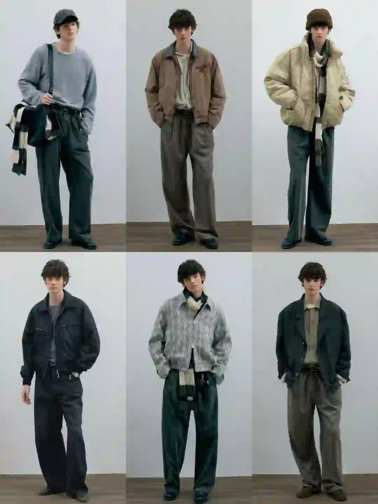
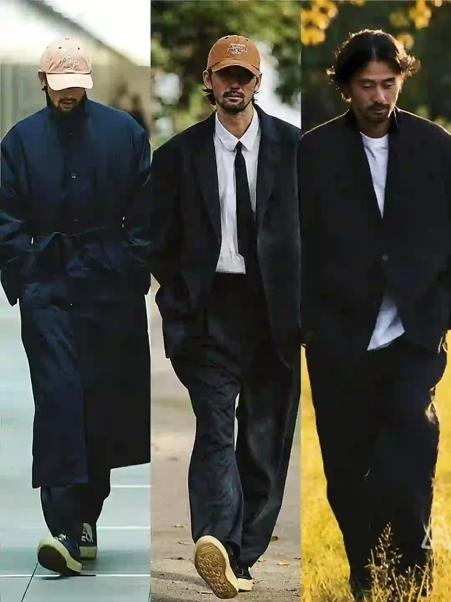
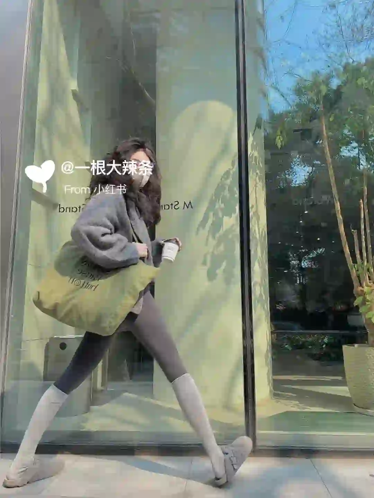
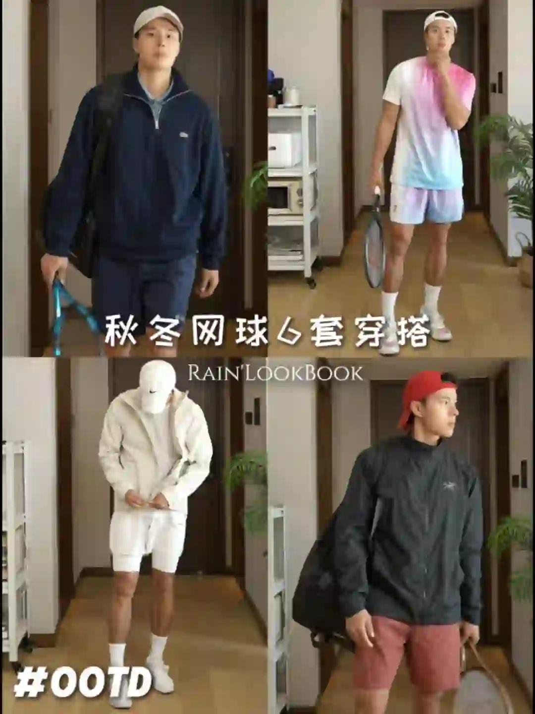

2026年3月28日
03月28日报告
生成时间：2026-03-28 · 范围：时尚 / 穿搭 / 网球
今日参考账号：伍叔的生活日记 / 设计灵感站 / FashionTrend.
今日高信号标题：为什么有些男生一看就很贵气 ｜ ✨审美积累丨排版不是文字大才吸睛 ｜ “秀场积累”Emporio Armani 26秋冬时装秀
竞品策略变化：未命中监控竞品样本
今日高信号标题：为什么有些男生一看就很贵气 ｜ ✨审美积累丨排版不是文字大才吸睛 ｜ “秀场积累”Emporio Armani 26秋冬时装秀
竞品策略变化：未命中监控竞品样本

时尚 · 01
为什么有些男生一看就很贵气
⭐ 2271
👍 3842
今天可学
- 内容结构：人物 + 4图，更像单点表达
- 收藏效率高，说明用户把它当成可复用模板/知识卡，不只是刷到即过
- 评论活跃，适合加入观点冲突、对比案例或常见误区来拉讨论
- 标签聚焦：#男性成长 / #男生必看 / #自我提升 / #极简主义

时尚 · 02
✨审美积累丨排版不是文字大才吸睛
⭐ 884
👍 1020
今天可学
- 内容结构：文字卡 + 18图，更像资料型合集
- 收藏效率高，说明用户把它当成可复用模板/知识卡，不只是刷到即过
- 正文入口：分享一组JOE DIVER的版式设计作品，文字排版，不是字体越大越好，错落有致的视觉韵律更吸睛。 #英文字体 #高级感排版 #设计美学 #审美积累 #平面设…
- 标签聚焦：#英文字体 / #高级感排版 / #设计美学 / #审美积累

时尚 · 03
“秀场积累”Emporio Armani 26秋冬时装秀
⭐ 567
👍 1059
今天可学
- 内容结构：人物 + 9图，更像资料型合集
- 这条流量带有明显外部加成，只拆内容结构与包装，不原样复制流量来源
- 正文入口：Emporio Armani 2026秋冬系列再现米兰式优雅。本季以标志性“夜空蓝”与“高级灰”为主调，为都市男女织就了一场“静奢”的冬日梦境。 褪去刻板的权力套装，大秀聚焦剪裁温…
- 标签聚焦：#小红书时装周群聊 / #每天一个穿搭灵感 / #RedFaceOfFashion100 / #审美提升

时尚 · 04
C2H4® 2025 Winter Drop Lookbook
⭐ 180
👍 247
今天可学
- 内容结构：文字卡 + 4图，更像单点表达
- 这条流量带有明显外部加成，只拆内容结构与包装，不原样复制流量来源
- 正文入口：潮流趋势/审美提升/灵感图片 潮流趋势灵感图片by:® 2025 Winter Drop Lookbook
- 标签聚焦：#廓系穿搭 / #每天一个穿搭灵感 / #潮流趋势 / #时尚穿搭
时尚 · 05
25AW LOOKBOOK PART.2
⭐ 200
👍 334
今天可学
- 内容结构：人物 + 0图，更像单点表达
- 收藏效率高，说明用户把它当成可复用模板/知识卡，不只是刷到即过
- 评论活跃，适合加入观点冲突、对比案例或常见误区来拉讨论
- 正文入口：（正文为空或未取到）
时尚赛道今日方法论
- 样本依据：为什么有些男生一看就很贵气 / ✨审美积累丨排版不是文字大才吸睛
- 当天结构信号：人物封面 + 4图 最强；优先学习样本 3 条，低收藏流量样本 0 条。
- 时尚赛道今天跑出来的是“审美判断 + 资料感整理”：像 ✨审美积累丨排版不是文字大才吸睛 这类高收藏样本，核心不是讲步骤，而是把趋势、风格线索和案例并排给足，用户才愿意以 86.7% 的收藏率反复回看。
- 执行建议：标题先抛出趋势/风格判断，再给明确收益；正文少讲空泛氛围，多给风格标签、对照案例和可复看的视觉结论，让内容更像灵感资料卡。
- 风险提醒：“秀场积累”Emporio Armani 26秋冬时装秀 已标记为 [不可复制]，只拆结构，不作为明日选题原样跟进。
今日参考账号：BongBong club / 日系穿搭佐佐木 / Shanghai sights
今日高信号标题：Ootd|谁还没爱上90s慵懒风穿搭 ｜ 是真的么？日本人穿搭水平真的是亚洲第一吗 ｜ 上海秋冬男士街拍年度18图（秋冬篇）
竞品策略变化：未命中监控竞品样本
今日高信号标题：Ootd|谁还没爱上90s慵懒风穿搭 ｜ 是真的么？日本人穿搭水平真的是亚洲第一吗 ｜ 上海秋冬男士街拍年度18图（秋冬篇）
竞品策略变化：未命中监控竞品样本

穿搭 · 01
Ootd|谁还没爱上90s慵懒风穿搭
⭐ 1233
👍 2664
今天可学
- 内容结构：产品 + 9图，更像资料型合集
- 收藏效率高，说明用户把它当成可复用模板/知识卡，不只是刷到即过
- 正文入口：伦敦街头的复古型男图鉴 在伦敦的街头巷尾，总能捕捉到把复古风穿得毫不费力的型男们🌆 从地铁月台的黑色系极简风，到街头独有的粗针毛衣+阔腿裤组合，再到博物馆建筑前的大地色针织衫+单宁…
- 标签聚焦：#伦敦街拍 / #复古穿搭 / #男士穿搭 / #90s风格

穿搭 · 02
是真的么？日本人穿搭水平真的是亚洲第一吗
⭐ 912
👍 2029
今天可学
- 内容结构：产品 + 4图，更像单点表达
- 这条流量带有明显外部加成，只拆内容结构与包装，不原样复制流量来源
- 评论活跃，适合加入观点冲突、对比案例或常见误区来拉讨论
- 正文入口：是真的么？日本人穿搭水平真的是亚洲第一吗#日系穿搭 #日系穿搭男 #男生日系穿搭 #男士成熟穿搭 #型男穿搭 #日系穿搭 #男人这样穿才型 #清冷系 #清冷系穿搭 #日系松弛感穿搭…
- 标签聚焦：#日系穿搭 / #日系穿搭男 / #男生日系穿搭 / #男士成熟穿搭

穿搭 · 03
上海秋冬男士街拍年度18图（秋冬篇）
⭐ 612
👍 2807
今天可学
- 内容结构：人物 + 18图，更像资料型合集
- 收藏效率高，说明用户把它当成可复用模板/知识卡，不只是刷到即过
- 评论活跃，适合加入观点冲突、对比案例或常见误区来拉讨论
- 标签聚焦：#城市氛围感穿搭 / #ootd每日穿搭 / #上海街拍 / #街拍穿搭
穿搭 · 04
当你喜欢金主训…
⭐ 299
👍 3150
今天可学
- 内容结构：未判定 + 0图，更像单点表达
- 点赞高于收藏，偏流量型曝光内容，不值得原样照抄
- 评论活跃，适合加入观点冲突、对比案例或常见误区来拉讨论
- 正文入口：（正文为空或未取到）

穿搭 · 05
18图合集｜去健身ootd🍂入秋版
⭐ 565
👍 1301
今天可学
- 内容结构：文字卡 + 18图，更像资料型合集
- 收藏效率高，说明用户把它当成可复用模板/知识卡，不只是刷到即过
- 正文入口：假期吃胖后“还债”的穿搭灵感来了
- 标签聚焦：#Ootd / #ootd每日穿搭 / #笔记灵感 / #健身穿搭
穿搭赛道今日方法论
- 样本依据：Ootd|谁还没爱上90s慵懒风穿搭 / 上海秋冬男士街拍年度18图（秋冬篇）
- 当天结构信号：产品封面 + 18图 最强；优先学习样本 3 条，低收藏流量样本 1 条。
- 穿搭赛道今天最有效的是“整套可抄作业方案”：高收藏样本 Ootd|谁还没爱上90s慵懒风穿搭 说明，只要场景清楚、look 数量够多、搭配结果一眼能看懂，就更容易拿到 46.3% 级别的收藏反馈。
- 执行建议：优先做通勤/职业/一周不重样/套装盘点这类清单式内容；封面先给完整上身结果，图组里再拆单品变化和搭配理由，不要只发单套氛围图。
- 反例提醒：当你喜欢金主训… 点赞高但收藏低，说明这类曝光型内容能带流量，不适合直接当明日主打法。
- 风险提醒：是真的么？日本人穿搭水平真的是亚洲第一吗 已标记为 [不可复制]，只拆结构，不作为明日选题原样跟进。
今日参考账号：网球gogogo / Takuya Komura 小村拓也 / 杨羽丰Rain
今日高信号标题：网球标准：德约科维奇-正手慢动作分析！ ｜ attack tennis 🎾 ｜ 秋季多巴胺/简单好看的6套网球入秋穿搭
竞品策略变化：未命中监控竞品样本
今日高信号标题：网球标准：德约科维奇-正手慢动作分析！ ｜ attack tennis 🎾 ｜ 秋季多巴胺/简单好看的6套网球入秋穿搭
竞品策略变化：未命中监控竞品样本

网球 · 01
网球标准：德约科维奇-正手慢动作分析！
⭐ 6513
👍 7452
今天可学
- 内容结构：视频封面 + 视频，更像视频示范/单点表达
- 这条流量带有明显外部加成，只拆内容结构与包装，不原样复制流量来源
- 正文入口：最适合业余选手学习的网球动作~#网球 #网球教学 #德约科维奇 #国庆节 #WTT中国大满贯 #网球中国赛季来了 #上海大师赛 #球类运动日常 #打球 #人生的意义
- 标签聚焦：#网球 / #网球教学 / #德约科维奇 / #国庆节

网球 · 02
attack tennis 🎾
⭐ 943
👍 4340
今天可学
- 内容结构：视频封面 + 视频，更像视频示范/单点表达
- 收藏效率高，说明用户把它当成可复用模板/知识卡，不只是刷到即过
- 标签聚焦：#tennis / #rf / #テニス / #网球

网球 · 03
秋季多巴胺/简单好看的6套网球入秋穿搭
⭐ 945
👍 1444
今天可学
- 内容结构：视频封面 + 视频，更像视频示范/单点表达
- 收藏效率高，说明用户把它当成可复用模板/知识卡，不只是刷到即过
- 评论活跃，适合加入观点冲突、对比案例或常见误区来拉讨论
- 正文入口：-秋冬保持轻巧不臃肿 一件外套搭配 可穿可脱更有层次感！ 👕Kswiss 卢布列夫 🩳Kswiss 卢布列夫 👟Nike Court Zoom NEX 🎾Head Extreme …
- 标签聚焦：#网球穿搭ootd / #网球穿搭 / #ootd每日穿搭 / #男士穿搭

网球 · 04
网球真开心
⭐ 238
👍 4254
今天可学
- 内容结构：视频封面 + 视频，更像视频示范/单点表达
- 点赞高于收藏，偏流量型曝光内容，不值得原样照抄
- 评论活跃，适合加入观点冲突、对比案例或常见误区来拉讨论
- 正文入口：久违的一天三练 早上依旧空腹爬坡和八段锦拍八虚 下午两小时的网球 强度不大但巨热 浑身湿透 狂饮五瓶水 回到家衣服不换了 趁着太阳刚刚落山温度非常舒适 于是慢跑了4㎞ 本以为可以跑…
- 标签聚焦：#网球 / #vlog / #ootd / #DRK
网球 · 05
网球穿搭分享🎾
⭐ 664
👍 1724
今天可学
- 内容结构：人物 + 0图，更像单点表达
- 收藏效率高，说明用户把它当成可复用模板/知识卡，不只是刷到即过
- 评论活跃，适合加入观点冲突、对比案例或常见误区来拉讨论
- 正文入口：（正文为空或未取到）
网球赛道今日方法论
- 样本依据：attack tennis 🎾 / 秋季多巴胺/简单好看的6套网球入秋穿搭
- 当天结构信号：视频封面封面 + 视频 最强；优先学习样本 3 条，低收藏流量样本 1 条。
- 网球赛道今天胜出的不是热闹球场感，而是“动作纠错/装备收益/新手可执行”：高收藏样本 秋季多巴胺/简单好看的6套网球入秋穿搭 证明，只要用户能马上拿去练，收藏率就能来到 65.4%。
- 执行建议：标题写清动作部位、错误修正或装备收益；内容里给慢动作、步骤和上场场景。明星/赛事样本只借包装，不把热点本身当方法论。
- 反例提醒：网球真开心 点赞高但收藏低，说明这类曝光型内容能带流量，不适合直接当明日主打法。
- 风险提醒：网球标准：德约科维奇-正手慢动作分析！ 已标记为 [不可复制]，只拆结构，不作为明日选题原样跟进。
- 自动抽取规则：仅收录收藏率 >20% 且未被标记为 [不可复制] 的标题模板
- 写入目标：/Users/zhangxiaosong/shared/context/xhs-knowledge/topics/title-templates.md
- 把今天高收藏、高可复制的打法优先塞进明日发帖计划
- 竞品若连续两天从展示型转向教程/资料型，单独开策略变更记录
- 对被标注 [不可复制] 的样本，只拆结构，不抄流量来源